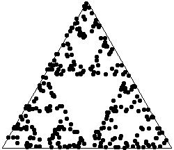

| The chaos game often is used as an
introduction to the more general Random IFS. |
| To illustrate its simplicity, frequently the chaos game is performed manually. |
| While this does convince of the simplicity of the chaos game, it is less effective in showing
the chaos game will generate fractals. For example, generating 30 points manually requires some patience,
but does the left picture give much hint of a gasket? |
|
 |
 |
|
| The right picture, consisting of 300 points, is much more convincingly a gasket. |
| No one would play the chaos game manually for 300 points, but this is not such a problem: software
can produce a 300 point chaos game in milliseconds (or less). |
| A goal of this lab is to show that combining the results of 10 people generating 30 points each
produces as good a picture of the gasket as that of a single person generating 300 points. |
|